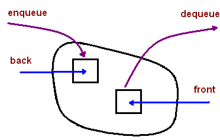

Queue
Introduction
A queue is a container of objects (a linear collection) that are inserted and removed according to the first-in first-out (FIFO) principle.
An excellent example of a queue is a line of students in the food court of the UC.
New additions to a line made to the back of the queue, while removal (or serving) happens in the front.
In the queue only two operations are allowed enqueue and dequeue. Enqueue means to insert an item into the back of the queue, dequeue means removing the front item.
The picture demonstrates the FIFO access.

The difference between stacks and queues is in removing. In a stack we remove the item the most recently added; in a queue, we remove the item the least recently added.
There are two pointers front and back
Functions
- Enqueue - It pushes element on back of queue.It means adding element to Queue
- Dequeue - It removes the front most element of queue.It means removing element from Queue
Algorithm
Addition into a queue
procedure addq (item : items);
{add item to the queue q}
begin
if rear=n then queuefull
else begin
rear :=rear+1;
q[rear]:=item;
end;
end;{of addq}
Deletion in a queue
procedure deleteq (var item : items);
{delete from the front of q and put into item}
begin
if front = rear then queueempty
else begin
front := front+1
item := q[front];
end;
end; {of deleteq}
Applications
- Operating systems often maintain a queue of processes that are ready to execute or that are waiting for a particular event to occur.
- Computer systems must often provide a “holding area” for messages between two processes, two programs, or even two systems.
This holding area is usually called a “buffer” and is often implemented as a queue.
- Breadth-First Search with a Queue
In breadth-first search we explore all the nearest possibilities by finding all possible successors and enqueue them to a queue.
Algorithm:
Create a queue
Create a new choice point
Enqueue the choice point onto the queue
while (not found and queue is not empty)
Dequeue the queue
Find all possible choices after the last one tried
Enqueue these choices onto the queue
Return
Run Code